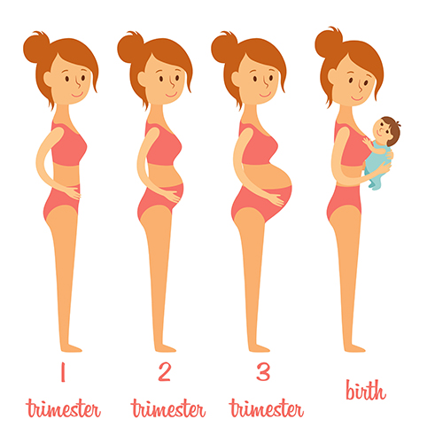

YOGA
During pregnancy your body goes through many changes, which creates stress on you mentally and physically. A way to maintain a healthy mind and body is prenatal yoga.
Prenatal yoga focuses on poses for pregnant women, in order to increase strength and flexibility.
Prenatal yoga is good for overall wellness. It is a form of exercise that also speaks to your pregnancy wellness.
Prenatal yoga may be the cure for what ails you if you're suffering from common pregnancy discomforts such as lower back pain, nausea, insomnia, headaches, shortness of breath, and carpal tunnel syndrome. By stretching and toning muscles, you can help blood circulate throughout the body in a healthy way. Also, deep breathing can bring much-needed oxygen to your baby and to your own muscles.
BODY CHANGES
A woman's body undergoes many transformations during the nine months of pregnancy.
Some of these physical changes are visible, such as an expanding belly and weight gain,
while others are well known, such as an enlarged uterus, morning sickness and backaches.
However, a few bodily changes may be unexpected and catch some women by surprise.
"It's remarkable how a woman's body adapts to accommodate a pregnancy,"
A woman's breast size and her bra size may change several times during pregnancy.
Bleeding gums are a common pregnancy complaint, and they may create an open portal to infections

PRECAUTIONS
When you are pregnant, there are some basic precautions that you should take to
ensure both your baby's and your health.
The first trimester of pregnancy will determine a lot about the progression
of your pregnancy into later phases and the health of your child.
Although, this joyful ride is going to be the best journey of your life, you need to prepare yourself
for the pregnancy. With preparation including precautions during early pregnancy you will be able to control
your pregnancy and avoid any complications.
Taking precautions during pregnancy will keep several problems at bay.